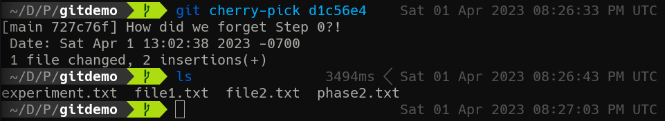
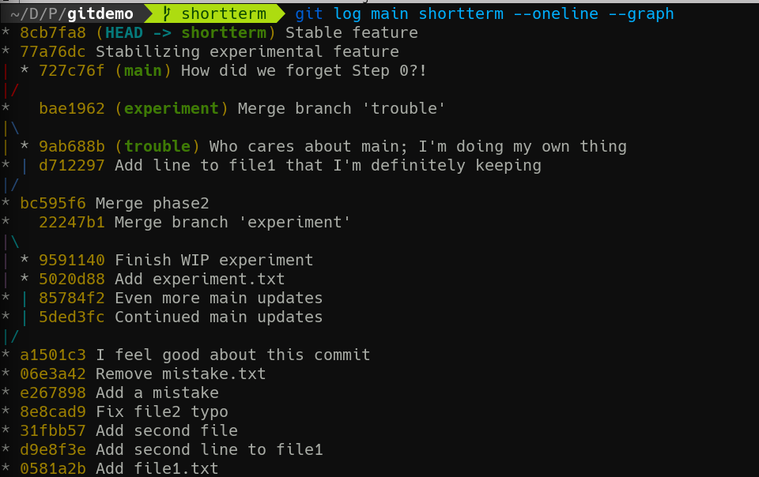
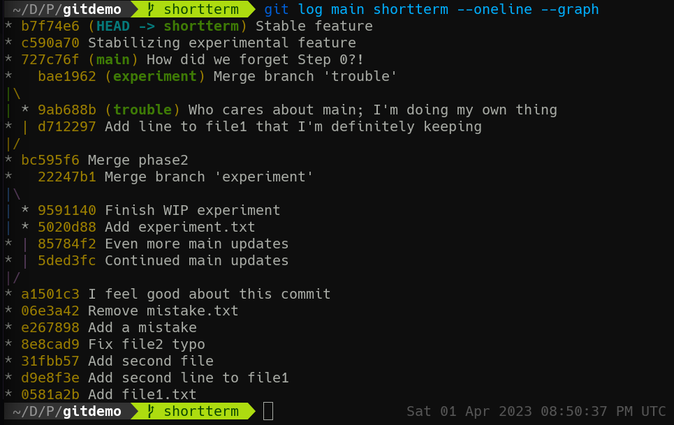

2-5: More Commit Sorcery
Before we finish with the unit on Git mechanics, I want to discuss two other invaluable ways of manipulating commits: cherry-pick and rebase.
For this exploration, let's begin by making two branches off of main.
git switch -c longterm
git switch -c shortterm
git switch main
And back to main. The idea here is we have two separate efforts in our project: a long-term project that has multiple goals and features to add, running in parallel to main for some time; and a short-term project that has a single objective and will soon be merged back into main.
Cherry Picking
But what if one of these branches ends up doing something cool that another branch needs? For example, what if the people working on longterm fix an error that affects every other branch, but nobody's quite ready to merge longterm in yet? How can we get that particular fix without getting everything else?
If we've been disciplined with our commits, we can use git cherry-pick. This will take a single commit hash and apply it to the current working tree without any other changes before or after. Let's see it in action by making a bunch of commits in longterm.
git switch longterm
echo "The start of something great" > newfeature.txt
git add newfeature.txt
git commit -m "Start new feature"
echo "Continued progress on new feature" >> newfeature.txt
git commit -am "More new feature work"
sed -i "s/Step 1/Step 0\nStep 1/m" phase2.txt
git commit -am "How did we forget Step 0?!"
If you wanna know more about that
sedcommand, you might like our Intro to Regular Expressions Course!
So, alongside the ongoing work on newfeature.txt, the folks working on longterm have fixed a problem in phase2.txt! How did we forget Step 0?! Ah well, problem solved. Of course, we aren't yet ready to merge this whole thing into main. Instead, we can use git cherry-pick to apply just this commit.
First, grab the commit hash for the most recent commit:
git log --oneline -n 1
Then, head over to main and pick that cherry!
git switch main
git cherry-pick <commit hash>
You'll see something like:

Looking at the contents of the repo, you won't see newfeature.txt! But phase2.txt has Step 0 now! This is yet another reason why being very intentional with your commits pays dividends. You never know when you might have to pick one off the tree.
git cherry-pickcan actually take as many commit hashes in order as you give it, but I would be very careful using it with more than one at at time.
All Your Rebase
Now let's head over to shortterm and add some work.
git switch shortterm
git mv experiment.txt feature.txt
git commit -m "Stabilizing experimental feature"
echo "Now working as intended" >> feature.txt
git commit -am "Stable feature"
This branch is now behind main thanks to our cherry-picked commit. It is also ahead of main with the changes introduced here.
At this point, we need to learn a new git log trick. It turns out you can give git log multiple branch names, and it will include all commits reachable from all the listed branches. So git log main shortterm --oneline --graph results in:

Note that the leftmost line is always our current branch, which is why main looks like a weird spar at the top there.
At this point, we have two options: we can merge main into shortterm, which will work fine, but may not be the story we want to tell, since we'll later be merging shortterm back to main. If we want shortterm to have its commits appear after the work in main, we have another option: git rebase will take our branch's commits and apply them after the new base, creating a single cohesive history. Try it!
git rebase main
Rerun git log main shortterm --oneline --graph. It looks different!

Now shortterm actually includes the Step 0 fix without a merge. This can be a cleaner way to handle updating feature branches rather than constant multidirectional merging. But! if you want to represent the actual order of when commits took place, merges may be more appropriate.
End of Unit 2
Nice job! You've made it through the most complex section of this course, covering basic Git mechanics. The topics in this Unit require practice to truly understand and internalize, and I encourage you to do so. Rebasing in particular tends to confuse people, so make sure to get comfortable with what happens during a rebase as opposed to a merge. Try explaining it in writing in your own words!
Then, we'll move off a single system in the next Unit on collaborating with others!